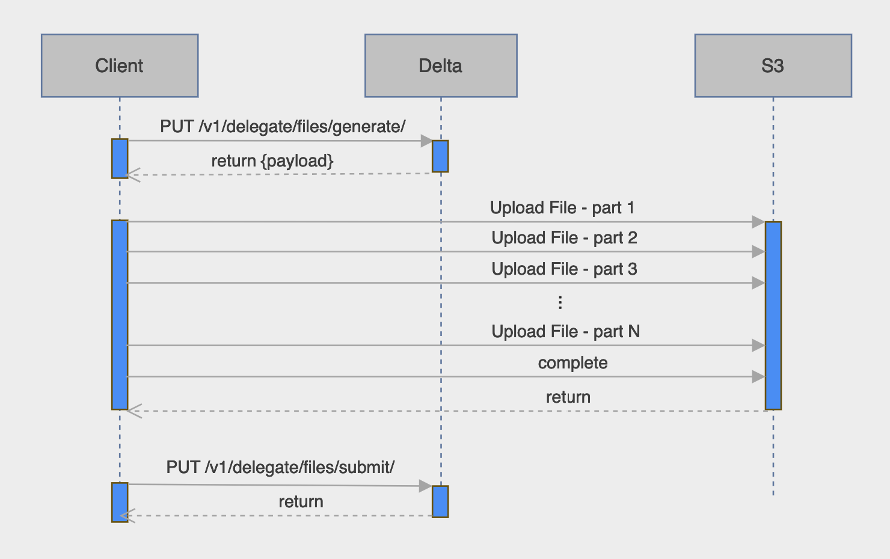

You are browsing the docs for the snapshot version of Nexus, the latest release is available here
Files
Files are attachment resources rooted in the /v1/files/{org_label}/{project_label}/ collection.
Each file belongs to a project identifier by the label {project_label} inside an organization identifier by the label {org_label}.
When creating, updating and reading files, the caller must have the permissions defined on the storage associated to the file on the current path of the project or the ancestor paths.
Please visit Authentication & authorization section to learn more about it.
Nexus metadata
When using the endpoints described on this page, the responses will contain global metadata described on the Nexus Metadata page. In addition, the following files specific metadata can be present
_bytes: size of the file in bytes_digest: algorithm and checksum used for file integrity_filename: name of the file_keywords: list of keywords associated with the file and which can be used to search for the file_location: path where the file is stored on the underlying storage_mediaType: MIME specifying the type of the file_origin: whether the file attributes resulted from an action taken by a client or the Nexus Storage Service_storage:@id,@type, and revision of the Storage used for the file_uuid: UUID of the file_project: address of the file’s project_incoming: address to query to obtain the list of incoming links_outgoing: address to query to obtain the list of outgoing links
Custom file metadata
When creating file resources, users can optionally provide custom metadata to be indexed and therefore searchable.
This takes the form of a metadata field containing a JSON Object with one or more of the following fields:
name: a string which is a descriptive name for the file. It will be indexed in the full-text search.description: a string that describes the file. It will be indexed in the full-text search.keywords: a JSON object withLabelkeys andstringvalues. These keywords will be indexed and can be used to search for the file.
Indexing
All the API calls modifying a file (creation, update, tagging, deprecation) can specify whether the file should be indexed synchronously or in the background. This behaviour is controlled using indexing query param, which can be one of two values:
async- (default value) the file will be indexed asynchronouslysync- the file will be indexed synchronously and the API call won’t return until the indexing is finished
Request body and headers for create and updates operations
The request body:
The body should be a multipart form, to allow file upload. The form should contain one part named file. This part can be given a content-type header, which will be used if specified. If not specified, the content-type will be inferred from the file’s extension.
This part can contain the following disposition parameters: - filename: the filename which will be used in the back-end file system
Headers:
x-nxs-file-metadata: an optional JSON object containing one or more of fields described in custom file metadata.x-nxs-file-content-length: the size of the uploaded file:- mandatory to upload to a S3 storage
- ignored for other types of storage
Create using POST
POST /v1/files/{org_label}/{project_label}?storage={storageId}&tag={tagName}
… where
{storageId}selects a specific storage backend where the file will be uploaded. This field is optional. When not specified, the default storage of the project is used.{tagName}an optional label given to the file on its first revision.
Request body and headers to provide
Example
- Request
-
source
curl -X POST \ -F "file=@/path/to/myfile.jpg;type=image/jpeg" \ -H 'x-nxs-file-metadata: {"name": "My File"}' \ "http://localhost:8080/v1/files/myorg/myproject" - Response
-
source
{ "@context": [ "https://bluebrain.github.io/nexus/contexts/files.json", "https://bluebrain.github.io/nexus/contexts/metadata.json" ], "@id": "http://localhost:8080/v1/resources/myorg/myproject/_/c581fdd4-6151-4430-aa33-f97ab6aa0b38", "@type": "File", "name": "My File", "_bytes": 8615, "_constrainedBy": "https://bluebrain.github.io/nexus/schemas/files.json", "_createdAt": "2021-05-12T07:28:30.472Z", "_createdBy": "http://localhost:8080/v1/anonymous", "_deprecated": false, "_digest": { "_algorithm": "SHA-256", "_value": "057a3811ecfbeb99506c538d42474d1916f1d9b66965b9e9378a00eab1bb913a" }, "_filename": "myfile.jpg", "_incoming": "http://localhost:8080/v1/files/myorg/myproject/c581fdd4-6151-4430-aa33-f97ab6aa0b38/incoming", "_mediaType": "image/jpeg", "_origin": "Client", "_outgoing": "http://localhost:8080/v1/files/myorg/myproject/c581fdd4-6151-4430-aa33-f97ab6aa0b38/outgoing", "_project": "http://localhost:8080/v1/projects/myorg/myproject", "_rev": 1, "_self": "http://localhost:8080/v1/files/myorg/myproject/c581fdd4-6151-4430-aa33-f97ab6aa0b38", "_storage": { "@id": "https://bluebrain.github.io/nexus/vocabulary/diskStorageDefault", "@type": "DiskStorage", "_rev": 1 }, "_updatedAt": "2021-05-12T07:28:30.472Z", "_updatedBy": "http://localhost:8080/v1/anonymous", "_uuid": "9af35be9-b2f2-4734-9646-c3423a62685d" }
Create using PUT
This alternative endpoint to create a resource is useful in case the json payload does not contain an @id but you want to specify one. The @id will be specified in the last segment of the endpoint URI.
PUT /v1/files/{org_label}/{project_label}/{file_id}?storage={storageId}&tag={tagName}
… where
{storageId}selects a specific storage backend where the file will be uploaded. This field is optional. When not specified, the default storage of the project is used.{tagName}an optional label given to the file on its first revision.
Request body and headers to provide
Example
- Request
-
source
curl -X PUT \ -F "file=@/path/to/myfile.pdf;type=application/pdf" \ -H 'x-nxs-file-metadata: {"name": "My File"}' \ "http://localhost:8080/v1/files/myorg/myproject/myfile?storage=s3&tag=mytag" - Response
-
source
{ "@context": [ "https://bluebrain.github.io/nexus/contexts/files.json", "https://bluebrain.github.io/nexus/contexts/metadata.json" ], "@id": "http://localhost:8080/v1/resources/myorg/myproject/_/myfile", "@type": "File", "name": "My File", "_bytes": 5963969, "_constrainedBy": "https://bluebrain.github.io/nexus/schemas/files.json", "_createdAt": "2021-05-12T07:30:54.576Z", "_createdBy": "http://localhost:8080/v1/anonymous", "_deprecated": false, "_digest": { "_algorithm": "SHA-256", "_value": "d14a7cb4602a2c6e1e7035809aa319d07a6d3c58303ecce7804d2e481cd4965f" }, "_filename": "myfile.pdf", "_incoming": "http://localhost:8080/v1/files/myorg/myproject/myfile/incoming", "_location": "file:///tmp/test/nexus/myorg/myproject/c/b/5/c/4/d/8/e/myfile.pdf", "_mediaType": "application/pdf", "_origin": "Client", "_outgoing": "http://localhost:8080/v1/files/myorg/myproject/myfile/outgoing", "_project": "http://localhost:8080/v1/projects/myorg/myproject", "_rev": 1, "_self": "http://localhost:8080/v1/files/myorg/myproject/myfile", "_storage": { "@id": "http://localhost:8080/v1/resources/myorg/myproject/_/s3", "@type": "S3Storage", "_rev": 1 }, "_updatedAt": "2021-05-12T07:30:54.576Z", "_updatedBy": "http://localhost:8080/v1/anonymous", "_uuid": "cb5c4d8e-0189-49ab-b761-c92b2d4f49d2" }
Update
This operation overrides the file content.
In order to ensure a client does not perform any changes to a file without having had seen the previous revision of the file, the last revision needs to be passed as a query parameter.
PUT /v1/files/{org_label}/{project_label}/{resource_id}?rev={previous_rev}
… where {previous_rev} is the last known revision number for the resource.
Request body and headers to provide
If only the metadata is provided, then the updated is a metadata update and the file content is not changed.
Example
- Request
-
source
curl -X PUT \ -F "file=@/path/to/myfile2.pdf;type=application/pdf" \ -H 'x-nxs-file-metadata: {"name": "My File"}' \ "http://localhost:8080/v1/files/myorg/myproject/myfile?rev=1" - Response
-
source
{ "@context": [ "https://bluebrain.github.io/nexus/contexts/files.json", "https://bluebrain.github.io/nexus/contexts/metadata.json" ], "@id": "http://localhost:8080/v1/resources/myorg/myproject/_/myfile", "@type": "File", "name": "My File", "_bytes": 13896460, "_constrainedBy": "https://bluebrain.github.io/nexus/schemas/files.json", "_createdAt": "2021-05-12T07:30:54.576Z", "_createdBy": "http://localhost:8080/v1/anonymous", "_deprecated": false, "_digest": { "_algorithm": "SHA-256", "_value": "4c9f4292e3c0c5fc23cd60722adb8a1535f1dd7f0cf9203140d61fb889eef3cf" }, "_filename": "myfile2.pdf", "_incoming": "http://localhost:8080/v1/files/myorg/myproject/myfile/incoming", "_mediaType": "application/pdf", "_origin": "Client", "_outgoing": "http://localhost:8080/v1/files/myorg/myproject/myfile/outgoing", "_project": "http://localhost:8080/v1/projects/myorg/myproject", "_rev": 2, "_self": "http://localhost:8080/v1/files/myorg/myproject/myfile", "_storage": { "@id": "https://bluebrain.github.io/nexus/vocabulary/diskStorageDefault", "@type": "DiskStorage", "_rev": 1 }, "_updatedAt": "2021-05-12T08:04:08.440Z", "_updatedBy": "http://localhost:8080/v1/anonymous", "_uuid": "3e86d93a-c196-407d-a13c-cea7168e32e3" }
Delegation & Linking (S3 only)
To support files stored in the cloud, Delta allows users to register files already uploaded to S3. This is useful primarily for large files where uploading directly through Delta using HTTP is inefficient and expensive.
There are two use cases: registering an already uploaded file by specifying its path, and asking Delta to generate a path in its standard format.
Linking a new file using POST
This endpoint accepts a path and creates a new file resource based on an existing S3 file.
POST /v1/link/files/{org_label}/{project_label}?storage={storageId}&tag={tagName}
{
"path": "{path}",
"mediaType": "{mediaType}",
"metadata": {metadata}
}
… where
{path}: String - the relative path to the file from the root of S3.{mediaType}: String - Optional MIME specifying the file type. If omitted this will be inferred by S3.{metadata}: JSON Object - Optional, see custom file metadata.{storageId}selects a specific storage backend where the file will be uploaded. This field is optional. When not specified, the default storage of the project is used.{tagName}an optional label given to the file on its first revision.
Example
- Request
-
source
curl -X POST \ -H "Content-Type: application/json" \ "http://localhost:8080/v1/link/files/myorg/myproject?storage=mys3storage" -d \ '{ "path": "relative/path/to/myfile.png", "mediaType": "image/png", "metadata": { "name": "My File", "description": "a description of the file", "keywords": { "key1": "value1", "key2": "value2" } } }' - Response
-
source
{ "@context" : [ "https://bluebrain.github.io/nexus/contexts/files.json", "https://bluebrain.github.io/nexus/contexts/metadata.json" ], "@id" : "http://delta:8080/v1/resources/hkrxvoxdyiiev1p/03vctrp70usfehq/_/iwa41vwspwke6nx", "@type" : "File", "_bytes" : 29625, "_constrainedBy" : "https://bluebrain.github.io/nexus/schemas/files.json", "_createdAt" : "2024-06-14T12:44:36.525177Z", "_createdBy" : "http://delta:8080/v1/realms/test-vuaplrsvrbkpkhca/users/byfxikrrdlmmvsvv", "_deprecated" : false, "_digest" : { "_algorithm" : "SHA-256", "_value" : "05bf442810213b9e5fecd5242eefeff1f3d207913861c96658c75ccf58997e87" }, "_filename" : "myfile.png", "_incoming" : "http://delta:8080/v1/files/hkrxvoxdyiiev1p/03vctrp70usfehq/http:%2F%2Fdelta:8080%2Fv1%2Fresources%2Fhkrxvoxdyiiev1p%2F03vctrp70usfehq%2F_%2Fiwa41vwspwke6nx/incoming", "_location" : "relative/path/to/myfile.png", "_mediaType" : "image/png", "_origin" : "Link", "_outgoing" : "http://delta:8080/v1/files/hkrxvoxdyiiev1p/03vctrp70usfehq/http:%2F%2Fdelta:8080%2Fv1%2Fresources%2Fhkrxvoxdyiiev1p%2F03vctrp70usfehq%2F_%2Fiwa41vwspwke6nx/outgoing", "_project" : "http://delta:8080/v1/projects/hkrxvoxdyiiev1p/03vctrp70usfehq", "_rev" : 1, "_self" : "http://delta:8080/v1/files/hkrxvoxdyiiev1p/03vctrp70usfehq/http:%2F%2Fdelta:8080%2Fv1%2Fresources%2Fhkrxvoxdyiiev1p%2F03vctrp70usfehq%2F_%2Fiwa41vwspwke6nx", "_storage" : { "@id" : "https://bluebrain.github.io/nexus/vocabulary/mys3storage", "@type" : "S3Storage", "_rev" : 3 }, "_updatedAt" : "2024-06-14T12:44:36.525177Z", "_updatedBy" : "http://delta:8080/v1/realms/test-vuaplrsvrbkpkhca/users/byfxikrrdlmmvsvv", "_uuid" : "79695062-ecbb-42dc-a62d-61c2c02be129" }
Linking a new file / update an existing file using PUT
This endpoint accepts a path and creates a new file resource or update an existing one based on an existing S3 file.
This alternative endpoint allows to specify the file @id.
PUT /v1/link/files/{org_label}/{project_label}/{fileId}?storage={storageId}&rev={previous_rev}&tag={tagName}
{
"path": "{path}",
"mediaType": "{mediaType}",
"metadata": {metadata}
}
… where
{path}: String - the relative path to the file from the root of S3.{mediaType}: String - Optional MIME specifying the file type. If omitted this will be inferred by S3.{metadata}: JSON Object - Optional, see custom file metadata.{storageId}selects a specific storage backend where the file will be uploaded. This field is optional. When not specified, the default storage of the project is used.{previous_rev}: the last known revision number for the file (if a file for{file_id}already exists on that project).{tagName}an optional label given to the file on the new revision.
Example
- Request
-
source
curl -X PUT \ -H "Content-Type: application/json" \ "http://localhost:8080/v1/link/files/myorg/myproject/fileid?storage=mys3storage" -d \ '{ "path": "relative/path/to/myfile.png", "mediaType": "image/png", "metadata": { "name": "My File", "description": "a description of the file", "keywords": { "key1": "value1", "key2": "value2" } } }' - Response
-
source
{ "@context" : [ "https://bluebrain.github.io/nexus/contexts/files.json", "https://bluebrain.github.io/nexus/contexts/metadata.json" ], "@id" : "http://delta:8080/v1/resources/hkrxvoxdyiiev1p/03vctrp70usfehq/_/iwa41vwspwke6nx", "@type" : "File", "_bytes" : 29625, "_constrainedBy" : "https://bluebrain.github.io/nexus/schemas/files.json", "_createdAt" : "2024-06-14T12:44:36.525177Z", "_createdBy" : "http://delta:8080/v1/realms/test-vuaplrsvrbkpkhca/users/byfxikrrdlmmvsvv", "_deprecated" : false, "_digest" : { "_algorithm" : "SHA-256", "_value" : "05bf442810213b9e5fecd5242eefeff1f3d207913861c96658c75ccf58997e87" }, "_filename" : "myfile.png", "_incoming" : "http://delta:8080/v1/files/hkrxvoxdyiiev1p/03vctrp70usfehq/http:%2F%2Fdelta:8080%2Fv1%2Fresources%2Fhkrxvoxdyiiev1p%2F03vctrp70usfehq%2F_%2Fiwa41vwspwke6nx/incoming", "_location" : "relative/path/to/myfile.png", "_mediaType" : "image/png", "_origin" : "Link", "_outgoing" : "http://delta:8080/v1/files/hkrxvoxdyiiev1p/03vctrp70usfehq/http:%2F%2Fdelta:8080%2Fv1%2Fresources%2Fhkrxvoxdyiiev1p%2F03vctrp70usfehq%2F_%2Fiwa41vwspwke6nx/outgoing", "_project" : "http://delta:8080/v1/projects/hkrxvoxdyiiev1p/03vctrp70usfehq", "_rev" : 1, "_self" : "http://delta:8080/v1/files/hkrxvoxdyiiev1p/03vctrp70usfehq/http:%2F%2Fdelta:8080%2Fv1%2Fresources%2Fhkrxvoxdyiiev1p%2F03vctrp70usfehq%2F_%2Fiwa41vwspwke6nx", "_storage" : { "@id" : "https://bluebrain.github.io/nexus/vocabulary/mys3storage", "@type" : "S3Storage", "_rev" : 3 }, "_updatedAt" : "2024-06-14T12:44:36.525177Z", "_updatedBy" : "http://delta:8080/v1/realms/test-vuaplrsvrbkpkhca/users/byfxikrrdlmmvsvv", "_uuid" : "79695062-ecbb-42dc-a62d-61c2c02be129" }
Delegating file uploads
Clients can use delegation for files that cannot be uploaded through Delta (e.g. large files which may benefit from multipart upload from S3). Here Delta will provide bucket and path details for the upload. Users are then expected to upload the file using other methods, and call back to Delta to register this file with the same metadata that was initially validated. The three steps are outlined in detail below.
The following diagram illustrates the process of uploading a large file using the delegation method: 
There is Delta configuration to be done prior to using this feature, in particular setting up the necessary RSA key to support secure communication between Delta and AWS and signing payloads.
The configuration can be found under the following key app.jws. Please note that the allowed duration of the process is configured there with a default of 3h. Check the configuration key app.jws.ttl to change this value.
1. Validate and generate path for file delegation
Delta accepts and validates the following payload.
Generate a delegation for a new file using POST
POST /v1/delegate/files/generate/{org_label}/{project_label}?storage={storageId}&tag={tagName}
{
"filename": "{filename}",
"mediaType": "{mediaType}",
"metadata": {metadata}
}
… where
{filename}: String - mandatory name given to the file within the generated path.{mediaType}: String - Optional MIME specifying the file type. If omitted this will be inferred by S3.{metadata}: JSON Object - Optional, see custom file metadata.{storageId}selects a specific storage backend where the file will be uploaded. This field is optional. When not specified, the default storage of the project is used.{tagName}: String - an optional label given to the file on the new revision.
Generate a delegation for a new file / update an existing file using PUT
This endpoint accepts a path and creates a new file resource or update an existing one based on an existing S3 file.
This alternative endpoint allows to specify the file @id.
PUT /v1/delegate/files/generate/{org_label}/{project_label}/{fileId}?storage={storageId}&rev={previous_rev}&tag={tagName}
{
"filename": "{filename}",
"mediaType": "{mediaType}",
"metadata": {metadata}
}
… where
{filename}: String - mandatory name given to the file within the generated path.{mediaType}: String - Optional MIME specifying the file type. If omitted this will be inferred by S3.{metadata}: JSON Object - Optional, see custom file metadata.{storageId}selects a specific storage backend where the file will be uploaded. This field is optional. When not specified, the default storage of the project is used.{previous_rev}: the last known revision number for the file (if a file for{file_id}already exists on that project).{tagName}: String - an optional label given to the file on the new revision.
Delegation payload
It then generates the following details for the file:
{
"@type": "FileDelegationCreationRequest",
"project": "{org_label}/{project_label}",
"id": "<file resource identifier>",
"rev": "<last known revision>",
"targetLocation": {
"storageId": "<storage identifier>",
"bucket": "<s3 bucket>",
"path": "<path from s3 root>"
},
"description": {
"filename": "<filename>",
"mediaType": "<user provided mediaType>",
"metadata": {}
}
}
The user is expected to upload their file to path within bucket. The id is reserved for when the file resource is created. mediaType and metadata are what the user specified in the request.
This payload is then signed using the flattened JWS serialization format to ensure that Delta has validated and generated the correct data. This same payload will be passed when creating the file resource.
{
"payload": "<base64 encoded payload contents>",
"protected": "<integrity-protected header contents>",
"signature": "<signature contents>"
}
The payload field can be base64 decoded to access the generated file details. Note that protected contains an expiry field exp with the datetime at which this signature will expire (in epoch seconds). To view this can also be base64 decoded.
Example
- Request
-
source
curl -X POST \ -H "Content-Type: application/json" \ "http://localhost:8080/v1/delegate/generate/files/myorg/myproject?storage=mys3storage" -d \ '{ "filename": "myfile.png", "mediaType": "image/png", "metadata": { "name": "My File", "description": "a description of the file", "keywords": { "key1": "value1", "key2": "value2" } } }' - Response
-
source
{ "protected" : "eyJleHAiOjE3MTg2Mjg1NDUsImFsZyI6IlJTMjU2In0", "payload" : "eyJidWNrZXQiOiJqNDc4M2NjNWFkY2F1a3UiLCJwYXRoIjoibXlwcmVmaXgvYTE0bTYxZWgzajVuNzVjLzhrbXlpb2QyMzM1MnhpZC9maWxlcy9iLzIvOS80LzMvYy9jLzYvaG5qeXR3b2x0ZnVyc2JlaCIsIm1lZGlhVHlwZSI6ImltYWdlL2RhbiIsIm1ldGFkYXRhIjp7ImRlc2NyaXB0aW9uIjoicnByZndzdWpveGJpaXllaSIsImtleXdvcmRzIjp7ImtvZXZvd3Bsc3Jld2NlZGIiOiJ2dnNlaW9wa3Z5Y3d1dG1oIn0sIm5hbWUiOiJmbW94dHh3a3JvdWhtZG90In0sImlkIjoiaHR0cDovL2RlbHRhOjgwODAvdjEvcmVzb3VyY2VzL2ExNG02MWVoM2o1bjc1Yy84a215aW9kMjMzNTJ4aWQvXy9hNGE5ODE2Mi1jYTNmLTQ2YmUtYWUxMC00MzJjYTZmOTdjNGYifQ", "signature" : "htQLymfQIrks7MejErb4v3mnhQT2W6iPZdkd7LVBPJ0Ksybj8XG8dbTJH5pjZJF7-HXi848R14tquZ6iSeXpEqFGiZYge8obPQRLpJA0qbc9Mmhlq-CTbIdsy5OFpdzcDadSj6_k_kzuU2PR-Fli9GtH-34z2d4C9dWsBmnUo_IA3dvSFCF_PaQuajo7cJYa_0yc4VVGKG-xYi9yV4ylD5D2cxMUDFun78NOKDD_2upF-kuf9t5E-NjCl0DffkelbqYuH6nMop2zmwfu-cwHnChaDwKM7HLJGLomD5duU5sq-mVsunnMy58NgzMecLGDbER-27zk7w0TwxkXTKfxWg" }
2. Upload file to S3
Using the bucket and path from the previous step, the file should be uploaded to S3 by whatever means are appropriate. The only restriction is that this must be finished before the expiry datetime of the signed payload.
Here are some tutorials in both Java with AWS SDK and Python with Boto3 that illustrate the process of doing a multipart upload to S3.
3. Create/update delegated file resource
Once the file has been uploaded to S3 at the specified path, the file resource can be created in the knowledge graph. The payload can be passed back exactly as it was returned in the previous step.
POST /v1/delegate/files/submit
{
"payload": "<base64 encoded payload contents>",
"protected": "<integrity-protected header contents>",
"signature": "<signature contents>"
}
Delta will verify that the signature matches the payload and that the expiry date is not passed. Then the file will be registered as a resource. The usual file resource response will be returned with all the standard metadata and file location details.
Example
- Request
-
source
curl -X POST \ -H "Content-Type: application/json" \ "http://localhost:8080/v1/delegate/files/submit" -d \ '{ "protected" : "eyJleHAiOjE3MTg2Mjg1NDUsImFsZyI6IlJTMjU2In0", "payload" : "eyJidWNrZXQiOiJqNDc4M2NjNWFkY2F1a3UiLCJwYXRoIjoibXlwcmVmaXgvYTE0bTYxZWgzajVuNzVjLzhrbXlpb2QyMzM1MnhpZC9maWxlcy9iLzIvOS80LzMvYy9jLzYvaG5qeXR3b2x0ZnVyc2JlaCIsIm1lZGlhVHlwZSI6ImltYWdlL2RhbiIsIm1ldGFkYXRhIjp7ImRlc2NyaXB0aW9uIjoicnByZndzdWpveGJpaXllaSIsImtleXdvcmRzIjp7ImtvZXZvd3Bsc3Jld2NlZGIiOiJ2dnNlaW9wa3Z5Y3d1dG1oIn0sIm5hbWUiOiJmbW94dHh3a3JvdWhtZG90In0sImlkIjoiaHR0cDovL2RlbHRhOjgwODAvdjEvcmVzb3VyY2VzL2ExNG02MWVoM2o1bjc1Yy84a215aW9kMjMzNTJ4aWQvXy9hNGE5ODE2Mi1jYTNmLTQ2YmUtYWUxMC00MzJjYTZmOTdjNGYifQ", "signature" : "htQLymfQIrks7MejErb4v3mnhQT2W6iPZdkd7LVBPJ0Ksybj8XG8dbTJH5pjZJF7-HXi848R14tquZ6iSeXpEqFGiZYge8obPQRLpJA0qbc9Mmhlq-CTbIdsy5OFpdzcDadSj6_k_kzuU2PR-Fli9GtH-34z2d4C9dWsBmnUo_IA3dvSFCF_PaQuajo7cJYa_0yc4VVGKG-xYi9yV4ylD5D2cxMUDFun78NOKDD_2upF-kuf9t5E-NjCl0DffkelbqYuH6nMop2zmwfu-cwHnChaDwKM7HLJGLomD5duU5sq-mVsunnMy58NgzMecLGDbER-27zk7w0TwxkXTKfxWg" }' - Response
-
source
{ "@context" : [ "https://bluebrain.github.io/nexus/contexts/files.json", "https://bluebrain.github.io/nexus/contexts/metadata.json" ], "@id" : "http://delta:8080/v1/resources/fcp5xcw67hittxm/loeu5kgu48i8tw7/_/1205b629-2a73-4891-abff-140a64e9c391", "@type" : "File", "description" : "a description of the file", "name" : "My File", "_bytes" : 29625, "_constrainedBy" : "https://bluebrain.github.io/nexus/schemas/files.json", "_createdAt" : "2024-06-14T12:53:38.516222Z", "_createdBy" : "http://delta:8080/v1/realms/test-pmcfwjobxkuvebro/users/fwhbqlnnhqncpsqk", "_deprecated" : false, "_digest" : { "_algorithm" : "SHA-256", "_value" : "05bf442810213b9e5fecd5242eefeff1f3d207913861c96658c75ccf58997e87" }, "_filename" : "myfile.png", "_incoming" : "http://delta:8080/v1/files/fcp5xcw67hittxm/loeu5kgu48i8tw7/http:%2F%2Fdelta:8080%2Fv1%2Fresources%2Ffcp5xcw67hittxm%2Floeu5kgu48i8tw7%2F_%2F1205b629-2a73-4891-abff-140a64e9c391/incoming", "_keywords" : { "key1" : "value1", "key2" : "value2" }, "_location" : "myprefix/fcp5xcw67hittxm/loeu5kgu48i8tw7/files/f/f/9/5/3/4/c/2/ngbeydtjyibvcanj", "_mediaType" : "image/png", "_origin" : "Link", "_outgoing" : "http://delta:8080/v1/files/fcp5xcw67hittxm/loeu5kgu48i8tw7/http:%2F%2Fdelta:8080%2Fv1%2Fresources%2Ffcp5xcw67hittxm%2Floeu5kgu48i8tw7%2F_%2F1205b629-2a73-4891-abff-140a64e9c391/outgoing", "_project" : "http://delta:8080/v1/projects/fcp5xcw67hittxm/loeu5kgu48i8tw7", "_rev" : 1, "_self" : "http://delta:8080/v1/files/fcp5xcw67hittxm/loeu5kgu48i8tw7/http:%2F%2Fdelta:8080%2Fv1%2Fresources%2Ffcp5xcw67hittxm%2Floeu5kgu48i8tw7%2F_%2F1205b629-2a73-4891-abff-140a64e9c391", "_storage" : { "@id" : "https://bluebrain.github.io/nexus/vocabulary/mys3storage", "@type" : "S3Storage", "_rev" : 3 }, "_updatedAt" : "2024-06-14T12:53:38.516222Z", "_updatedBy" : "http://delta:8080/v1/realms/test-pmcfwjobxkuvebro/users/fwhbqlnnhqncpsqk", "_uuid" : "c96a229c-8d1d-46a5-8f47-08555fd98cb3" }
Tag
Links a file revision to a specific name.
Tagging a file is considered to be an update as well.
POST /v1/files/{org_label}/{project_label}/{file_id}/tags?rev={previous_rev}
{
"tag": "{name}",
"rev": {rev}
}
… where
{previous_rev}: is the last known revision number for the file.{name}: String - label given to the file at specific revision.{rev}: Number - the revision to link the provided{name}.
Example
- Request
-
source
curl -X POST \ -H "Content-Type: application/json" \ "http://localhost:8080/v1/files/myorg/myproject/myfile/tags?rev=2" -d \ '{ "tag": "mytag", "rev": 1 }' - Payload
-
source
{ "tag": "mytag", "rev": 1 } - Response
-
source
{ "@context": [ "https://bluebrain.github.io/nexus/contexts/files.json", "https://bluebrain.github.io/nexus/contexts/metadata.json" ], "@id": "http://localhost:8080/v1/resources/myorg/myproject/_/myfile", "@type": "File", "_bytes": 13896460, "_constrainedBy": "https://bluebrain.github.io/nexus/schemas/files.json", "_createdAt": "2021-05-12T07:30:54.576Z", "_createdBy": "http://localhost:8080/v1/anonymous", "_deprecated": false, "_digest": { "_algorithm": "SHA-256", "_value": "4c9f4292e3c0c5fc23cd60722adb8a1535f1dd7f0cf9203140d61fb889eef3cf" }, "_filename": "myfile2.pdf", "_incoming": "http://localhost:8080/v1/files/myorg/myproject/myfile/incoming", "_mediaType": "application/pdf", "_origin": "Client", "_outgoing": "http://localhost:8080/v1/files/myorg/myproject/myfile/outgoing", "_project": "http://localhost:8080/v1/projects/myorg/myproject", "_rev": 3, "_self": "http://localhost:8080/v1/files/myorg/myproject/myfile", "_storage": { "@id": "https://bluebrain.github.io/nexus/vocabulary/diskStorageDefault", "@type": "DiskStorage", "_rev": 1 }, "_updatedAt": "2021-05-12T08:07:55.442Z", "_updatedBy": "http://localhost:8080/v1/anonymous", "_uuid": "3e86d93a-c196-407d-a13c-cea7168e32e3" }
Remove tag
Removes a given tag.
Removing a tag is considered to be an update as well.
DELETE /v1/files/{org_label}/{project_label}/{file_id}/tags/{tag_name}?rev={previous_rev}
… where
{previous_rev}: is the last known revision number for the resource.{tag_name}: String - label of the tag to remove.
Example
- Request
-
source
curl -X DELETE \ "http://localhost:8080/v1/files/myorg/myproj/myfile/tags/mytag?rev=2" - Response
-
source
{ "@context": [ "https://bluebrain.github.io/nexus/contexts/files.json", "https://bluebrain.github.io/nexus/contexts/metadata.json" ], "@id": "http://localhost:8080/v1/resources/myorg/myproject/_/myfile", "@type": "File", "_bytes": 13896460, "_constrainedBy": "https://bluebrain.github.io/nexus/schemas/files.json", "_createdAt": "2021-05-12T07:30:54.576Z", "_createdBy": "http://localhost:8080/v1/anonymous", "_deprecated": false, "_digest": { "_algorithm": "SHA-256", "_value": "4c9f4292e3c0c5fc23cd60722adb8a1535f1dd7f0cf9203140d61fb889eef3cf" }, "_filename": "myfile2.pdf", "_incoming": "http://localhost:8080/v1/files/myorg/myproject/myfile/incoming", "_mediaType": "application/pdf", "_origin": "Client", "_outgoing": "http://localhost:8080/v1/files/myorg/myproject/myfile/outgoing", "_project": "http://localhost:8080/v1/projects/myorg/myproject", "_rev": 3, "_self": "http://localhost:8080/v1/files/myorg/myproject/myfile", "_storage": { "@id": "https://bluebrain.github.io/nexus/vocabulary/diskStorageDefault", "@type": "DiskStorage", "_rev": 1 }, "_updatedAt": "2021-05-12T08:07:55.442Z", "_updatedBy": "http://localhost:8080/v1/anonymous", "_uuid": "3e86d93a-c196-407d-a13c-cea7168e32e3" }
Deprecate
Locks the file, so no further operations can be performed.
Deprecating a file is considered to be an update as well.
DELETE /v1/files/{org_label}/{project_label}/{file_id}?rev={previous_rev}
… where {previous_rev} is the last known revision number for the file.
Example
- Request
-
source
curl -X DELETE \ "http://localhost:8080/v1/files/myorg/myproject/myfile?rev=3" - Response
-
source
{ "@context": [ "https://bluebrain.github.io/nexus/contexts/files.json", "https://bluebrain.github.io/nexus/contexts/metadata.json" ], "@id": "http://localhost:8080/v1/resources/myorg/myproject/_/myfile", "@type": "File", "_bytes": 13896460, "_constrainedBy": "https://bluebrain.github.io/nexus/schemas/files.json", "_createdAt": "2021-05-12T07:30:54.576Z", "_createdBy": "http://localhost:8080/v1/anonymous", "_deprecated": true, "_digest": { "_algorithm": "SHA-256", "_value": "4c9f4292e3c0c5fc23cd60722adb8a1535f1dd7f0cf9203140d61fb889eef3cf" }, "_filename": "myfile2.pdf", "_incoming": "http://localhost:8080/v1/files/myorg/myproject/myfile/incoming", "_mediaType": "application/pdf", "_origin": "Client", "_outgoing": "http://localhost:8080/v1/files/myorg/myproject/myfile/outgoing", "_project": "http://localhost:8080/v1/projects/myorg/myproject", "_rev": 4, "_self": "http://localhost:8080/v1/files/myorg/myproject/myfile", "_storage": { "@id": "https://bluebrain.github.io/nexus/vocabulary/diskStorageDefault", "@type": "DiskStorage", "_rev": 1 }, "_updatedAt": "2021-05-12T08:09:23.658Z", "_updatedBy": "http://localhost:8080/v1/anonymous", "_uuid": "3e86d93a-c196-407d-a13c-cea7168e32e3" }
Undeprecate
Unlocks a previously deprecated file. Further operations can then be performed. The file will again be found when listing/querying.
Undeprecating a file is considered to be an update as well.
PUT /v1/file/{org_label}/{project_label}/{file_id}/undeprecate?rev={previous_rev}
… where {previous_rev} is the last known revision number for the resource.
Example
- Request
-
source
curl -X PUT \ "http://localhost:8080/v1/files/myorg/myproject/myfile/undeprecate?rev=4" - Response
-
source
{ "@context": [ "https://bluebrain.github.io/nexus/contexts/files.json", "https://bluebrain.github.io/nexus/contexts/metadata.json" ], "@id": "http://localhost:8080/v1/resources/myorg/myproject/_/myfile", "@type": "File", "_bytes": 13896460, "_constrainedBy": "https://bluebrain.github.io/nexus/schemas/files.json", "_createdAt": "2021-05-12T07:30:54.576Z", "_createdBy": "http://localhost:8080/v1/anonymous", "_deprecated": false, "_digest": { "_algorithm": "SHA-256", "_value": "4c9f4292e3c0c5fc23cd60722adb8a1535f1dd7f0cf9203140d61fb889eef3cf" }, "_filename": "myfile2.pdf", "_incoming": "http://localhost:8080/v1/files/myorg/myproject/myfile/incoming", "_mediaType": "application/pdf", "_origin": "Client", "_outgoing": "http://localhost:8080/v1/files/myorg/myproject/myfile/outgoing", "_project": "http://localhost:8080/v1/projects/myorg/myproject", "_rev": 5, "_self": "http://localhost:8080/v1/files/myorg/myproject/myfile", "_storage": { "@id": "https://bluebrain.github.io/nexus/vocabulary/diskStorageDefault", "@type": "DiskStorage", "_rev": 1 }, "_updatedAt": "2021-05-12T08:09:23.658Z", "_updatedBy": "http://localhost:8080/v1/anonymous", "_uuid": "3e86d93a-c196-407d-a13c-cea7168e32e3" }
Fetch
When fetching a file, the response format can be chosen through HTTP content negotiation. In order to fetch the file metadata, the client can use any of the following MIME types. However, in order to fetch the file content, the HTTP Accept header */* (or any MIME type that matches the file MediaType) should be provided.
GET /v1/files/{org_label}/{project_label}/{file_id}?rev={rev}&tag={tag}
where …
{rev}: Number - the targeted revision to be fetched. This field is optional and defaults to the latest revision.{tag}: String - the targeted tag to be fetched. This field is optional.
{rev} and {tag} fields cannot be simultaneously present.
Example
- Request (binary)
-
source
curl -o myfile2.pdf \ -H "Accept: */*" \ "http://localhost:8080/v1/files/myorg/myproject/myfile" - Request (metadata)
-
source
curl -H "Accept: application/ld+json" \ "http://localhost:8080/v1/files/myorg/myproject/myfile" - Response (metadata)
-
source
{ "@context": [ "https://bluebrain.github.io/nexus/contexts/files.json", "https://bluebrain.github.io/nexus/contexts/metadata.json" ], "@id": "http://localhost:8080/v1/resources/myorg/myproject/_/myfile", "@type": "File", "_bytes": 13896460, "_constrainedBy": "https://bluebrain.github.io/nexus/schemas/files.json", "_createdAt": "2021-05-12T07:30:54.576Z", "_createdBy": "http://localhost:8080/v1/anonymous", "_deprecated": true, "_digest": { "_algorithm": "SHA-256", "_value": "4c9f4292e3c0c5fc23cd60722adb8a1535f1dd7f0cf9203140d61fb889eef3cf" }, "_filename": "myfile2.pdf", "_incoming": "http://localhost:8080/v1/files/myorg/myproject/myfile/incoming", "_mediaType": "application/pdf", "_origin": "Client", "_outgoing": "http://localhost:8080/v1/files/myorg/myproject/myfile/outgoing", "_project": "http://localhost:8080/v1/projects/myorg/myproject", "_rev": 4, "_self": "http://localhost:8080/v1/files/myorg/myproject/myfile", "_storage": { "@id": "https://bluebrain.github.io/nexus/vocabulary/diskStorageDefault", "@type": "DiskStorage", "_rev": 1 }, "_updatedAt": "2021-05-12T08:09:23.658Z", "_updatedBy": "http://localhost:8080/v1/anonymous", "_uuid": "3e86d93a-c196-407d-a13c-cea7168e32e3" }
If the redirect to Fusion feature is enabled and if the Accept header is set to text/html, a redirection to the fusion representation of the resource will be returned.
Fetch tags
Retrieves all the tags available for the {file_id}.
GET /v1/files/{org_label}/{project_label}/{file_id}/tags?rev={rev}&tag={tag}
where …
{rev}: Number - the targeted revision of the tags to be fetched. This field is optional and defaults to the latest revision.{tag}: String - the targeted tag of the tags to be fetched. This field is optional.
{rev} and {tag} fields cannot be simultaneously present.
Example
- Request
-
source
curl "http://localhost:8080/v1/files/myorg/myproject/myfile/tags" - Response
-
source
{ "@context": "https://bluebrain.github.io/nexus/contexts/tags.json", "tags": [ { "rev": 1, "tag": "mytag" } ] }
List
There are three available endpoints to list files in different scopes.
Within a project
GET /v1/files/{org_label}/{project_label}?from={from}
&size={size}
&deprecated={deprecated}
&rev={rev}
&type={type}
&createdBy={createdBy}
&updatedBy={updatedBy}
&q={search}
&sort={sort}
&aggregations={aggregations}
Within an organization
This operation returns only files from projects defined in the organisation {org_label} and where the caller has the resources/read permission.
GET /v1/files/{org_label}?from={from}
&size={size}
&deprecated={deprecated}
&rev={rev}
&type={type}
&createdBy={createdBy}
&updatedBy={updatedBy}
&q={search}
&sort={sort}
&aggregations={aggregations}
Within all projects
This operation returns only files from projects where the caller has the resources/read permission.
GET /v1/files?from={from}
&size={size}
&deprecated={deprecated}
&rev={rev}
&type={type}
&createdBy={createdBy}
&updatedBy={updatedBy}
&q={search}
&sort={sort}
&aggregations={aggregations}
Parameter description
{from}: Number - is the parameter that describes the offset for the current query; defaults to0{size}: Number - is the parameter that limits the number of results; defaults to20{deprecated}: Boolean - can be used to filter the resulting files based on their deprecation status{rev}: Number - can be used to filter the resulting files based on their revision value{type}: Iri - can be used to filter the resulting files based on their@typevalue. This parameter can appear multiple times, filtering further the@typevalue.{createdBy}: Iri - can be used to filter the resulting files based on their creator{updatedBy}: Iri - can be used to filter the resulting files based on the person which performed the last update{search}: String - can be provided to select only the files in the collection that have attribute values matching (containing) the provided string{sort}: String - can be used to sort files based on a payloads’ field. This parameter can appear multiple times to enable sorting by multiple fields. The default is done by_createdByand@id.{aggregations}: Boolean - iftruethen the response will only contain aggregations of the@typeand_projectfields; defaults tofalse. See Aggregations.
Example
- Request
-
source
curl "http://localhost:8080/v1/files/myorg/myproject?deprecated=false" - Response
-
source
{ "@context": [ "https://bluebrain.github.io/nexus/contexts/metadata.json", "https://bluebrain.github.io/nexus/contexts/search.json", "https://bluebrain.github.io/nexus/contexts/search-metadata.json" ], "_total": 3, "_results": [ { "@id": "http://localhost:8080/v1/resources/myorg/myproject/_/c581fdd4-6151-4430-aa33-f97ab6aa0b38", "@type": "File", "_bytes": 8615, "_constrainedBy": "https://bluebrain.github.io/nexus/schemas/files.json", "_createdAt": "2021-05-12T07:28:30.472Z", "_createdBy": "http://localhost:8080/v1/anonymous", "_deprecated": false, "_digest": { "_algorithm": "SHA-256", "_value": "057a3811ecfbeb99506c538d42474d1916f1d9b66965b9e9378a00eab1bb913a" }, "_filename": "myfile.jpg", "_incoming": "http://localhost:8080/v1/files/myorg/myproject/c581fdd4-6151-4430-aa33-f97ab6aa0b38/incoming", "_mediaType": "image/jpeg", "_outgoing": "http://localhost:8080/v1/files/myorg/myproject/c581fdd4-6151-4430-aa33-f97ab6aa0b38/outgoing", "_project": "http://localhost:8080/v1/projects/myorg/myproject", "_rev": 1, "_self": "http://localhost:8080/v1/files/myorg/myproject/c581fdd4-6151-4430-aa33-f97ab6aa0b38", "_storage": { "@id": "https://bluebrain.github.io/nexus/vocabulary/diskStorageDefault", "@type": "DiskStorage", "_rev": 1 }, "_updatedAt": "2021-05-12T07:28:30.472Z", "_updatedBy": "http://localhost:8080/v1/anonymous", "_uuid": "9af35be9-b2f2-4734-9646-c3423a62685d" }, { "@id": "http://localhost:8080/v1/resources/myorg/myproject/_/9ca0d270-35f0-4369-9c17-296fe36fd9a5", "@type": "File", "_bytes": 1658857, "_constrainedBy": "https://bluebrain.github.io/nexus/schemas/files.json", "_createdAt": "2021-05-12T07:56:42.991Z", "_createdBy": "http://localhost:8080/v1/anonymous", "_deprecated": false, "_digest": { "_algorithm": "SHA-256", "_value": "e88fd2d76dd7c1a144c68e89a38c972251623dacf4c898154aae4c3b03eb4a84" }, "_filename": "myfile.png", "_incoming": "http://localhost:8080/v1/files/myorg/myproject/9ca0d270-35f0-4369-9c17-296fe36fd9a5/incoming", "_location": "file:///tmp/test/nexus/myorg/myproject/3/4/c/4/9/1/a/1/myfile.png", "_mediaType": "image/png", "_outgoing": "http://localhost:8080/v1/files/myorg/myproject/9ca0d270-35f0-4369-9c17-296fe36fd9a5/outgoing", "_project": "http://localhost:8080/v1/projects/myorg/myproject", "_rev": 2, "_self": "http://localhost:8080/v1/files/myorg/myproject/9ca0d270-35f0-4369-9c17-296fe36fd9a5", "_storage": { "@id": "http://localhost:8080/v1/resources/myorg/myproject/_/s3", "@type": "S3Storage", "_rev": 1 }, "_updatedAt": "2021-05-12T07:56:48.380Z", "_updatedBy": "http://localhost:8080/v1/anonymous", "_uuid": "34c491a1-17ba-4726-bdf2-3b4e1e150750" }, { "@id": "http://localhost:8080/v1/resources/myorg/myproject/_/mylink", "@type": "File", "_bytes": 1658857, "_constrainedBy": "https://bluebrain.github.io/nexus/schemas/files.json", "_createdAt": "2021-05-12T08:00:34.563Z", "_createdBy": "http://localhost:8080/v1/anonymous", "_deprecated": false, "_digest": { "_algorithm": "SHA-256", "_value": "e88fd2d76dd7c1a144c68e89a38c972251623dacf4c898154aae4c3b03eb4a84" }, "_filename": "myfile2.png", "_incoming": "http://localhost:8080/v1/files/myorg/myproject/mylink/incoming", "_location": "file:///tmp/test/nexus/myorg/myproject/6/6/0/4/9/9/d/9/myfile2.png", "_mediaType": "image/png", "_outgoing": "http://localhost:8080/v1/files/myorg/myproject/mylink/outgoing", "_project": "http://localhost:8080/v1/projects/myorg/myproject", "_rev": 2, "_self": "http://localhost:8080/v1/files/myorg/myproject/mylink", "_storage": { "@id": "http://localhost:8080/v1/resources/myorg/myproject/_/s3", "@type": "S3Storage", "_rev": 1 }, "_updatedAt": "2021-05-12T08:00:40.790Z", "_updatedBy": "http://localhost:8080/v1/anonymous", "_uuid": "660499d9-c522-4f90-beda-2d79e538ffce" } ] }
Server Sent Events
From Delta 1.5, it is possible to fetch SSEs for all files or just files in the scope of an organization or a project.
GET /v1/files/events # for all file events in the application
GET /v1/files/{org_label}/events # for file events in the given organization
GET /v1/files/{org_label}/{project_label}/events # for file events in the given project
The caller must have respectively the events/read permission on /, {org_label} and {org_label}/{project_label}.
{org_label}: String - the selected organization for which the events are going to be filtered{project_label}: String - the selected project for which the events are going to be filteredLast-Event-Id: String - optional HTTP Header that identifies the last consumed resource event. It can be used for cases when a client does not want to retrieve the whole event stream, but to start after a specific event.
The event type for files SSEs have been changed so that it is easier to distinguish them from other types of resources.
Example
- Request
-
source
curl -H "Last-Event-Id: fc6078f0-b2f3-11eb-96af-ed7fe24c2ccf" \ "http://localhost:8080/v1/files/myorg/myproject/events" - Response
-
source
data:{"@context":["https://bluebrain.github.io/nexus/contexts/metadata.json","https://bluebrain.github.io/nexus/contexts/files.json"],"@type":"FileCreated","_attributes":{"_bytes":1658857,"_digest":{"_value":""},"_filename":"myfile.png","_location":"file:///tmp/test/nexus/myorg/myproject/3/4/c/4/9/1/a/1/myfile.png","_mediaType":"image/png","_origin":"Storage","_uuid":"34c491a1-17ba-4726-bdf2-3b4e1e150750"},"_fileId":"http://localhost:8080/v1/resources/myorg/myproject/_/9ca0d270-35f0-4369-9c17-296fe36fd9a5","_instant":"2021-05-12T07:56:42.991Z","_project":"http://localhost:8080/v1/projects/myorg/myproject","_resourceId":"http://localhost:8080/v1/resources/myorg/myproject/_/9ca0d270-35f0-4369-9c17-296fe36fd9a5","_rev":1,"_storage":{"@id":"http://localhost:8080/v1/resources/myorg/myproject/_/s3","@type":"S3Storage","_resourceId":"http://localhost:8080/v1/resources/myorg/myproject/_/s3","_rev":1},"_subject":"http://localhost:8080/v1/anonymous"} event:FileCreated id:9750c010-b2f7-11eb-96af-ed7fe24c2ccf data:{"@context":["https://bluebrain.github.io/nexus/contexts/metadata.json","https://bluebrain.github.io/nexus/contexts/files.json"],"@type":"FileAttributesUpdated","_bytes":1658857,"_digest":{"_algorithm":"SHA-256","_value":"e88fd2d76dd7c1a144c68e89a38c972251623dacf4c898154aae4c3b03eb4a84"},"_fileId":"http://localhost:8080/v1/resources/myorg/myproject/_/9ca0d270-35f0-4369-9c17-296fe36fd9a5","_instant":"2021-05-12T07:56:48.380Z","_mediaType":"image/png","_project":"http://localhost:8080/v1/projects/myorg/myproject","_resourceId":"http://localhost:8080/v1/resources/myorg/myproject/_/9ca0d270-35f0-4369-9c17-296fe36fd9a5","_rev":2,"_subject":"http://localhost:8080/v1/anonymous"} event:FileAttributesUpdated id:9a8229e0-b2f7-11eb-96af-ed7fe24c2ccf data:{"@context":["https://bluebrain.github.io/nexus/contexts/metadata.json","https://bluebrain.github.io/nexus/contexts/files.json"],"@type":"FileCreated","_attributes":{"_bytes":1658857,"_digest":{"_value":""},"_filename":"myfile2.png","_location":"file:///tmp/test/nexus/myorg/myproject/6/6/0/4/9/9/d/9/myfile2.png","_origin":"Storage","_uuid":"660499d9-c522-4f90-beda-2d79e538ffce"},"_fileId":"http://localhost:8080/v1/resources/myorg/myproject/_/mylink","_instant":"2021-05-12T08:00:34.563Z","_project":"http://localhost:8080/v1/projects/myorg/myproject","_resourceId":"http://localhost:8080/v1/resources/myorg/myproject/_/mylink","_rev":1,"_storage":{"@id":"http://localhost:8080/v1/resources/myorg/myproject/_/s3","@type":"S3Storage","_resourceId":"http://localhost:8080/v1/resources/myorg/myproject/_/s3","_rev":1},"_subject":"http://localhost:8080/v1/anonymous"} event:FileCreated id:21564eb0-b2f8-11eb-96af-ed7fe24c2ccf data:{"@context":["https://bluebrain.github.io/nexus/contexts/metadata.json","https://bluebrain.github.io/nexus/contexts/files.json"],"@type":"FileAttributesUpdated","_bytes":1658857,"_digest":{"_algorithm":"SHA-256","_value":"e88fd2d76dd7c1a144c68e89a38c972251623dacf4c898154aae4c3b03eb4a84"},"_fileId":"http://localhost:8080/v1/resources/myorg/myproject/_/mylink","_instant":"2021-05-12T08:00:40.790Z","_mediaType":"image/png","_project":"http://localhost:8080/v1/projects/myorg/myproject","_resourceId":"http://localhost:8080/v1/resources/myorg/myproject/_/mylink","_rev":2,"_subject":"http://localhost:8080/v1/anonymous"} event:FileAttributesUpdated id:2508f670-b2f8-11eb-96af-ed7fe24c2ccf data:{"@context":["https://bluebrain.github.io/nexus/contexts/metadata.json","https://bluebrain.github.io/nexus/contexts/files.json"],"@type":"FileUpdated","_attributes":{"_bytes":13896460,"_digest":{"_algorithm":"SHA-256","_value":"4c9f4292e3c0c5fc23cd60722adb8a1535f1dd7f0cf9203140d61fb889eef3cf"},"_filename":"myfile2.pdf","_mediaType":"application/pdf","_origin":"Client","_uuid":"3e86d93a-c196-407d-a13c-cea7168e32e3"},"_fileId":"http://localhost:8080/v1/resources/myorg/myproject/_/myfile","_instant":"2021-05-12T08:04:08.440Z","_project":"http://localhost:8080/v1/projects/myorg/myproject","_resourceId":"http://localhost:8080/v1/resources/myorg/myproject/_/myfile","_rev":2,"_storage":{"@id":"https://bluebrain.github.io/nexus/vocabulary/diskStorageDefault","@type":"DiskStorage","_resourceId":"https://bluebrain.github.io/nexus/vocabulary/diskStorageDefault","_rev":1},"_subject":"http://localhost:8080/v1/anonymous"} event:FileUpdated id:a0cdd690-b2f8-11eb-96af-ed7fe24c2ccf data:{"@context":["https://bluebrain.github.io/nexus/contexts/metadata.json","https://bluebrain.github.io/nexus/contexts/files.json"],"@type":"FileTagAdded","tag":"mytag","targetRev":1,"_fileId":"http://localhost:8080/v1/resources/myorg/myproject/_/myfile","_instant":"2021-05-12T08:07:55.442Z","_project":"http://localhost:8080/v1/projects/myorg/myproject","_resourceId":"http://localhost:8080/v1/resources/myorg/myproject/_/myfile","_rev":3,"_subject":"http://localhost:8080/v1/anonymous"} event:FileTagAdded id:281b9830-b2f9-11eb-96af-ed7fe24c2ccf data:{"@context":["https://bluebrain.github.io/nexus/contexts/metadata.json","https://bluebrain.github.io/nexus/contexts/files.json"],"@type":"FileDeprecated","_fileId":"http://localhost:8080/v1/resources/myorg/myproject/_/myfile","_instant":"2021-05-12T08:09:23.658Z","_project":"http://localhost:8080/v1/projects/myorg/myproject","_resourceId":"http://localhost:8080/v1/resources/myorg/myproject/_/myfile","_rev":4,"_subject":"http://localhost:8080/v1/anonymous"} event:FileDeprecated id:5cb049b0-b2f9-11eb-96af-ed7fe24c2ccf